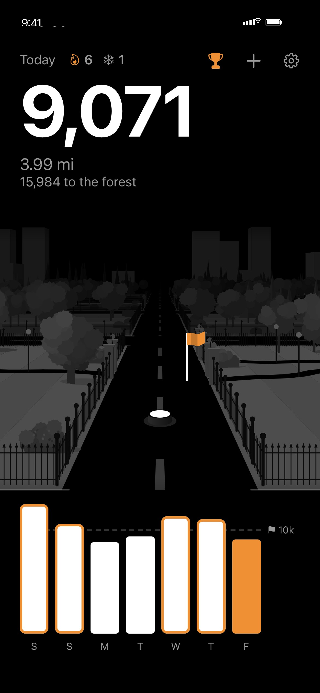
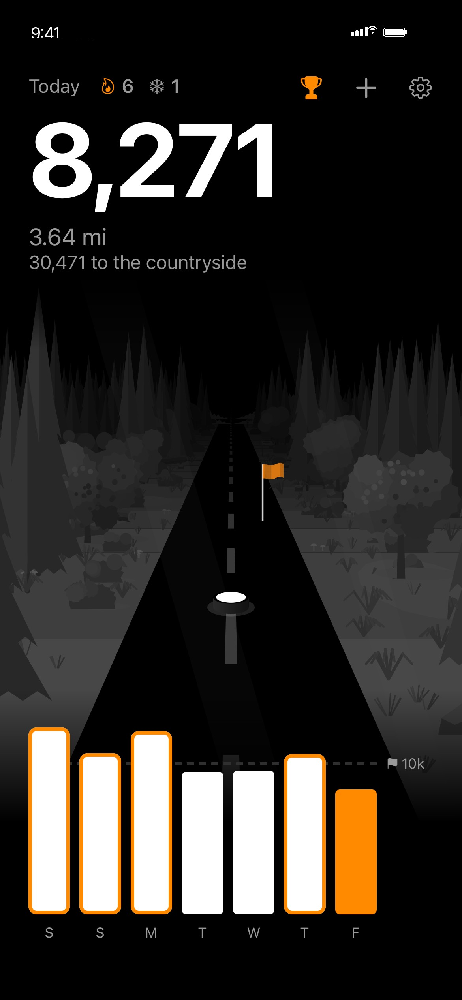
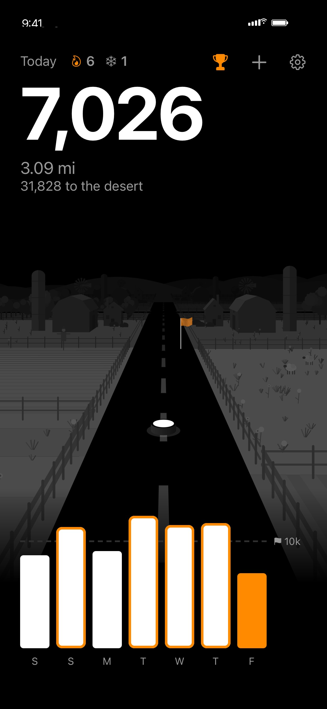

Make every walk a journey.
JustWalk turns your daily steps into a road trip. Every step moves you forward through stunning hand-illustrated worlds: a bustling city, a peaceful park, a breathtaking forest, rolling countryside and a vast, quiet desert.
Free 7-day trial, then $1.99/month or $9.99/year. iPhone, with Apple Health.



More than a number
Your steps become distance on a road. Watch the world change around you as you get closer to the next one.
Goals, streaks & milestones
Set a daily goal that fits you, keep your streak alive, and unlock milestones along the way.
Your week in review
A clean, shareable weekly recap of your steps, distance, goal days and biggest day.
Private by design
No accounts, no ads, no tracking. Your step data stays on your phone.
Works with Apple Health
Reads your steps and walking distance from Apple Health. Add steps by hand any time.
Calm, beautiful design
Greyscale worlds with a warm orange glow. Nothing loud, just you and the road ahead.